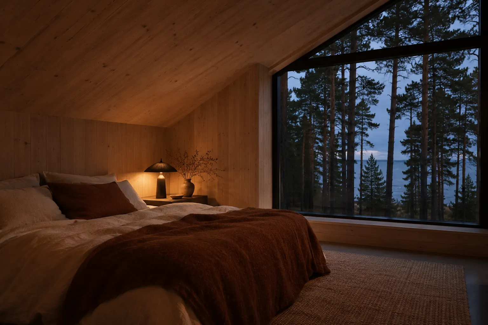

Дом в КомаровоHouse in Komarovo
- ПлощадьArea
- 210 м²210 m²
- ГодYear
- 2024
- СрокDuration
- 14 месяцев14 months
- ОбъектProperty
- Загородный домCountry house
- РаботыScope
- Проект, ремонт, комплектацияDesign, renovation, sourcing

ЗадачаThe brief
Дом стоит в сосновом лесу у Финского залива, хозяева живут в нём круглый год. Просили большой камин, много дневного света и стол, за которым помещается вся семья.
The house stands in a pine forest by the Gulf of Finland, and the owners live there all year round. They asked for a big fireplace, plenty of daylight and a table that seats the whole family.
Что сделалиWhat we did
Гостиную сделали в два этажа высотой, с окнами от пола до потолка, за ними сосны. Камин сложили из грубого тёмного камня, стены и потолок обшили светлой сосновой доской. Кухня-столовая открыта в гостиную, стол на восемь человек стоит у окна. Спальню устроили под скатом крыши, окно в ней повторяет треугольник фронтона.
The living room is two storeys high, with floor-to-ceiling windows onto the pines. The fireplace is built of rough dark stone, and the walls and ceiling are clad in pale pine boards. The kitchen and dining room open onto the living room, with a table for eight by the window. The bedroom sits under the roof slope, and its window follows the triangle of the gable.
МатериалыMaterials
Беленая сосна, тёмный камень, шерсть, лён, овчина
Bleached pine, dark stone, wool, linen, sheepskin

